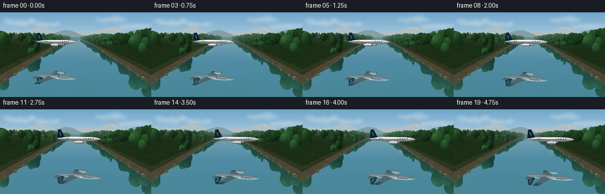
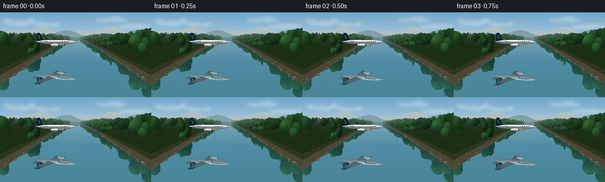
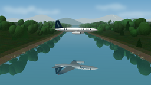

CODING AGENTS AS PIXEL WORLD MODELS
traex/GPT-6.1-Sol · phygen_058
点击播放 · 原生 RGB 像素
逐轮保存的候选
回放视频、检查图与代码变化。
每份候选均可单独播放。实际图片检查记录在下方工具轨迹中。
候选 01播放与检查图
点击播放 · 原生 RGB 像素


展开代码变化
--- 上一保存版本
+++ 本次保存版本
@@ -0,0 +1,307 @@
+from pathlib import Path
+import math
+import numpy as np
+from PIL import Image, ImageDraw, ImageFilter
+import artifact_io
+
+ROOT=Path(__file__).resolve().parent
+W,H,SS=256,144,3
+SW,SH=W*SS,H*SS
+F=235*SS; CX=128*SS; HY=42*SS; CAMY=15.0
+rng=np.random.default_rng(5802)
+LIGHT=np.array([-.45,.78,-.43]); LIGHT/=np.linalg.norm(LIGHT)
+
+class Mesh:
+ def __init__(self): self.p=[];self.n=[];self.c=[];self.tri=[]
+ def add(self,p,faces,color,normals=None):
+ p=np.asarray(p,float); faces=np.asarray(faces,int)
+ if normals is None:
+ # duplicate vertices for flat terrain facets
+ pp=p[faces].reshape(-1,3)
+ nn=np.cross(p[faces[:,1]]-p[faces[:,0]],p[faces[:,2]]-p[faces[:,0]])
+ nn/=np.maximum(np.linalg.norm(nn,axis=1)[:,None],1e-8)
+ nn=np.repeat(nn,3,axis=0)
+ off=len(self.p); self.p.extend(pp);self.n.extend(nn)
+ col=np.asarray(color,float)
+ if col.ndim==1:col=np.tile(col,(len(pp),1))
+ elif len(col)==len(faces):col=np.repeat(col,3,axis=0)
+ self.c.extend(col);self.tri.extend(np.arange(off,off+len(pp)).reshape(-1,3))
+ else:
+ off=len(self.p);self.p.extend(p);self.n.extend(normals)
+ self.c.extend(np.tile(color,(len(p),1)) if np.asarray(color).ndim==1 else color)
+ self.tri.extend(faces+off)
+ def arrays(self):return tuple(np.array(x) for x in (self.p,self.n,self.c,self.tri))
+
+def render(mesh,base,mirror=False,air=False):
+ p,n,c,tri=mesh.arrays() if isinstance(mesh,Mesh) else mesh
+ p=p.copy(); n=n.copy()
+ # Surface reflection uses real virtual geometry below the y=0 plane.
+ if mirror:p[:,1]*=-1;n[:,1]*=-1
+ z=p[:,2]
+ xy=np.column_stack((CX+F*p[:,0]/z,HY-F*(p[:,1]-CAMY)/z))
+ view=np.column_stack((-p[:,0],CAMY-p[:,1],-p[:,2]));view/=np.linalg.norm(view,axis=1)[:,None]
+ nl=np.maximum(0,n@LIGHT)
+ if mirror:
+ original_n=n.copy();original_n[:,1]*=-1
+ nl=np.maximum(0,original_n@LIGHT)
+ shade=.48+.52*nl
+ colors=c*shade[:,None]
+ if air:
+ half=view+LIGHT;half/=np.linalg.norm(half,axis=1)[:,None]
+ spec=np.maximum(0,np.sum(n*half,axis=1))**36
+ colors+=spec[:,None]*42
+ haze=1-np.exp(-np.maximum(z-110,0)/1100)
+ colors=colors*(1-haze[:,None])+np.array([151,181,188])*haze[:,None]
+ out=np.array(base,float).copy(); depth=np.full((SH,SW),np.inf);mask=np.zeros((SH,SW),bool)
+ for ids in tri:
+ if np.min(z[ids])<=1:continue
+ q=xy[ids]; x0=max(0,int(np.floor(q[:,0].min())));x1=min(SW-1,int(np.ceil(q[:,0].max())))
+ y0=max(0,int(np.floor(q[:,1].min())));y1=min(SH-1,int(np.ceil(q[:,1].max())))
+ if x1<x0 or y1<y0:continue
+ a,b,d=q
+ den=(b[1]-d[1])*(a[0]-d[0])+(d[0]-b[0])*(a[1]-d[1])
+ if abs(den)<1e-8:continue
+ yy,xx=np.mgrid[y0:y1+1,x0:x1+1];xx=xx+.5;yy=yy+.5
+ u=((b[1]-d[1])*(xx-d[0])+(d[0]-b[0])*(yy-d[1]))/den
+ v=((d[1]-a[1])*(xx-d[0])+(a[0]-d[0])*(yy-d[1]))/den
+ w=1-u-v
+ inv=u/z[ids[0]]+v/z[ids[1]]+w/z[ids[2]]
+ zz=1/np.maximum(inv,1e-9)
+ hit=(u>=-1e-5)&(v>=-1e-5)&(w>=-1e-5)&(zz<depth[y0:y1+1,x0:x1+1])
+ if not hit.any():continue
+ col=(u[:,:,None]*colors[ids[0]]/z[ids[0]]+v[:,:,None]*colors[ids[1]]/z[ids[1]]+w[:,:,None]*colors[ids[2]]/z[ids[2]])*zz[:,:,None]
+ out[y0:y1+1,x0:x1+1][hit]=col[hit]
+ depth[y0:y1+1,x0:x1+1][hit]=zz[hit];mask[y0:y1+1,x0:x1+1][hit]=True
+ return np.clip(out,0,255),mask,depth
+
+def ellipsoid(mesh,center,radii,color,rings=7,sides=11):
+ p=[];n=[]
+ for i in range(rings+1):
+ theta=np.pi*i/rings
+ for j in range(sides):
+ phi=2*np.pi*j/sides
+ v=np.array([np.sin(theta)*np.cos(phi),np.cos(theta),np.sin(theta)*np.sin(phi)])
+ p.append(np.array(center)+v*radii);nn=v/np.array(radii);n.append(nn/np.linalg.norm(nn))
+ faces=[]
+ for i in range(rings):
+ for j in range(sides):
+ a=i*sides+j;b=i*sides+(j+1)%sides;c=(i+1)*sides+j;d=(i+1)*sides+(j+1)%sides
+ faces.extend([[a,b,c],[b,d,c]])
+ mesh.add(p,faces,color,n)
+
+def river_width(z):return 22+5*np.sin(z/185)+.015*z
+
+def terrain_h(d,z):
+ return .14+(1-np.exp(-d/34))*(7+8*np.sin(z/140+1)**2)+d*.025+8*(1-np.exp(-d/130))*np.sin(z/72+d/40)**2
+
+# Painted by physical scene projection: blue sky, wisps, distant alpine ridges.
+yy,xx=np.mgrid[0:SH,0:SW]; y=yy/SS;x=xx/SS
+f=np.clip(y/65,0,1)
+sky=np.stack((111+85*f,166+48*f,203+26*f),axis=-1)
+clouds=Image.new('L',(SW,SH),0);dr=ImageDraw.Draw(clouds)
+for cx,cy,ww,hh in [(39,17,43,5),(78,21,25,3),(189,12,36,4),(222,24,35,3)]:
+ for i in range(16):
+ dx=rng.normal(0,ww*.38);dy=rng.normal(0,hh*.3);r=rng.uniform(3,9)
+ dr.ellipse(((cx+dx-r)*SS,(cy+dy-hh*.7)*SS,(cx+dx+r)*SS,(cy+dy+hh*.7)*SS),fill=int(rng.uniform(70,125)))
+cloud=np.asarray(clouds.filter(ImageFilter.GaussianBlur(2.6*SS)))/255
+sky=sky*(1-cloud[:,:,None]*.75)+np.array([250,250,245])*cloud[:,:,None]*.75
+# distant ridge silhouettes in atmospheric perspective, reflected at infinity
+back=Image.fromarray(np.uint8(sky));dd=ImageDraw.Draw(back)
+for layer,(col,baseline,amp) in enumerate([((171,190,197),44,19),((130,159,168),47,16),((91,128,136),50,10)]):
+ xs=np.linspace(-20,276,220)
+ ridge=baseline-amp*(.25+.5*np.sin(xs/38+layer*1.9)**2+.32*np.sin(xs/19+.8+layer)**2)
+ pts=[(float(a*SS),float(b*SS)) for a,b in zip(xs,ridge)]+[(276*SS,70*SS),(-20*SS,70*SS)]
+ dd.polygon(pts,fill=col)
+ # sunlight falling across a few long ridges
+ if layer==0:
+ for j in [35,104,156]:
+ px=xs[j];py=ridge[j]
+ dd.polygon([(px*SS,py*SS),((px+8)*SS,(py+7)*SS),((px+3)*SS,(py+4)*SS)],fill=(190,205,204))
+back=np.array(back,float)
+
+land=Mesh()
+zs=np.geomspace(28,1600,65);ds=np.r_[0,1.0,2.8,np.geomspace(5,600,32)]
+for side in [-1,1]:
+ ps=[]
+ for z in zs:
+ for d in ds:
+ ps.append([side*(river_width(z)+d),terrain_h(d,z),z])
+ faces=[];colors=[]
+ for iz in range(len(zs)-1):
+ for ix in range(len(ds)-1):
+ a=iz*len(ds)+ix;b=a+1;c=a+len(ds);d=c+1
+ for ids in [[a,c,b],[b,c,d]]:
+ if side==1:ids=ids[::-1]
+ faces.append(ids)
+ distance=ds[ix]
+ basecol=np.array([102,120,72]) if distance<3 else np.array([65,105,54])
+ if distance<1.1:basecol=np.array([160,151,118])
+ colors.append(basecol+rng.normal(0,5,3))
+ land.add(ps,faces,colors)
+# forests along both banks, varied clustered crowns with small gaps at the shore
+for side in [-1,1]:
+ for k in range(440):
+ z=rng.uniform(48,1200);d=rng.exponential(34)+3
+ xc=side*(river_width(z)+d);h=terrain_h(d,z)
+ th=rng.uniform(5,12)*(1+.0003*z)
+ shade=rng.uniform(.8,1.2);color=np.array([44,88,46])*shade
+ if k%4==0:
+ # firs with tiered irregularly shaded conical crowns
+ for tier in range(3):
+ r=th*(.28-.055*tier);by=h+th*(.17+.2*tier);top=h+th*(.65+.17*tier)
+ pp=[[xc,top,z]]+[[xc+r*np.cos(a),by,z+r*np.sin(a)] for a in np.linspace(0,2*np.pi,10,endpoint=False)]
+ ff=[[0,1+j,1+(j+1)%10] for j in range(10)]
+ land.add(pp,ff,color*np.array([.87,1,.95]))
+ else:
+ ellipsoid(land,[xc,h+th*.64,z],[th*.35,th*.46,th*.33],color,5,8)
+ for j in range(2):
+ dx=rng.normal(0,th*.16);dz=rng.normal(0,th*.14)
+ ellipsoid(land,[xc+dx,h+th*rng.uniform(.55,.8),z+dz],[th*.24,th*.3,th*.25],color*rng.uniform(.95,1.13),4,7)
+# small rock clusters visible at shoreline
+for side in [-1,1]:
+ for k in range(55):
+ z=rng.uniform(35,160);d=rng.uniform(-.5,2)
+ ellipsoid(land,[side*(river_width(z)+d),.2,z],[rng.uniform(.2,.8),rng.uniform(.2,.5),rng.uniform(.3,.9)],[133,135,111],3,7)
+
+# Render static banks and their exact reflected counterparts.
+land_img,land_mask,land_depth=render(land,back)
+refsky=np.array(sky,float).copy()
+for row in range(int(HY),SH):
+ source=int(max(0,min(SH-1,2*HY-row)))
+ refsky[row]=back[source]
+refl_img,refl_mask,refl_depth=render(land,refsky,mirror=True)
+# Water optical depth and fine visible riverbed near shallow banks.
+water=np.array(sky,float).copy()
+zsurf=F*CAMY/np.maximum(yy-HY,.01)
+xsurf=(xx-CX)*zsurf/F
+margin=river_width(zsurf)-np.abs(xsurf)
+shallow=np.exp(-np.maximum(margin,0)/2.0)*np.clip((y-63)/65,0,1)
+bednoise=np.sin(xsurf*3.3+np.sin(zsurf*2.3))*np.sin(zsurf*4.1)+.45*np.sin(xsurf*9+zsurf*7)
+bed=np.stack([68+20*bednoise,105+15*bednoise,91+12*bednoise],axis=-1)
+water_base=np.stack([37+12*np.clip((y-42)/102,0,1),101+11*np.clip((y-42)/102,0,1),112+5*np.clip((y-42)/102,0,1)],axis=-1)
+water_base=water_base*(1-shallow[:,:,None]*.7)+bed*shallow[:,:,None]*.7
+reflectance=.68-.27*np.clip((y-42)/102,0,1)
+water=refl_img*reflectance[:,:,None]+water_base*(1-reflectance[:,:,None])
+# very faint surface striations, keeping the mirror predominantly unbroken
+stripes=(np.sin(y*3.6+.035*x)+np.sin(y*1.3-.045*x))*.4
+water+=stripes[:,:,None]*np.array([.6,.85,1.0])
+scene=np.array(land_img)
+water_region=(yy>HY)&(~land_mask)
+scene[water_region]=water[water_region]
+
+# Aircraft mesh: polished white jet with blue livery, swept wings, twin turbofans.
+plane=Mesh()
+# Local coordinates [longitudinal (nose +), height, span].
+profiles=[(-15,.15),(-14,.43),(-12,.83),(-10,1.1),(-8,1.28),(-5,1.36),(0,1.36),(5,1.35),(8,1.3),(10,1.13),(11.5,.91),(12.6,.61),(13.5,.31),(14,0.025)]
+p=[];n=[];col=[];N=32
+for i,(u,r) in enumerate(profiles):
+ slope=(profiles[min(i+1,len(profiles)-1)][1]-profiles[max(i-1,0)][1])/(profiles[min(i+1,len(profiles)-1)][0]-profiles[max(i-1,0)][0])
+ for j in range(N):
+ a=2*np.pi*j/N
+ p.append([u,r*np.sin(a),r*np.cos(a)]);nn=np.array([-slope,np.sin(a),np.cos(a)]);n.append(nn/np.linalg.norm(nn))
+ blue=abs(np.sin(a))<.19 and u<10
+ col.append([29,83,117] if blue else [232,237,235])
+faces=[]
+for i in range(len(profiles)-1):
+ for j in range(N):
+ a=i*N+j;b=i*N+(j+1)%N;c=(i+1)*N+j;d=(i+1)*N+(j+1)%N
+ faces.extend([[a,c,b],[b,c,d]])
+plane.add(p,faces,col,n)
+# Airfoil wings, with soft camber and slightly raised tips.
+def wing(side,span,leading,trailing,root_y,dihedral,tail=False):
+ spans=np.array([0,.15,.38,.67,1])*span
+ chordsteps=np.array([0,.07,.2,.4,.65,.85,1])
+ pp=[];nn=[];cc=[]
+ for surface in [1,-1]:
+ for s in spans:
+ t=s/span;le=leading[0]*(1-t)+leading[1]*t;te=trailing[0]*(1-t)+trailing[1]*t
+ for a in chordsteps:
+ u=le+(te-le)*a
+ thick=(.16 if not tail else .09)*(1-.65*t)*np.sin(np.pi*a)**.65
+ pp.append([u,root_y+dihedral*s+surface*thick,side*s])
+ nn.append([0,surface,0])
+ cc.append([33,89,128] if t>.93 and not tail else ([218,225,222] if surface>0 else [174,190,194]))
+ nf=len(spans)*len(chordsteps);ff=[]
+ for surf in range(2):
+ for i in range(len(spans)-1):
+ for j in range(len(chordsteps)-1):
+ a=surf*nf+i*len(chordsteps)+j;b=a+1;c=a+len(chordsteps);d=c+1
+ ff.extend([[a,b,c],[b,d,c]])
+ for j in range(len(chordsteps)-1):
+ a=(len(spans)-1)*len(chordsteps)+j
+ ff.extend([[a,a+1,a+nf],[a+1,a+nf+1,a+nf]])
+ plane.add(pp,ff,cc,nn)
+for s in [-1,1]:
+ wing(s,15.5,(2.8,-4.5),(-5.2,-7.2),-.38,.044)
+ wing(s,5.4,(-9.6,-12.5),(-14.7,-15.3),.5,.05,True)
+# Vertical tail fin, navy blue and a silver leading edge.
+pp=[[-9.4,.8,-.1],[-12.4,6.3,-.1],[-14.3,6.1,-.1],[-15.0,.6,-.1],[-9.4,.8,.1],[-12.4,6.3,.1],[-14.3,6.1,.1],[-15.0,.6,.1]]
+plane.add(pp,[[0,1,2],[0,2,3],[4,6,5],[4,7,6],[0,4,5],[0,5,1],[1,5,6],[1,6,2]],[28,77,109])
+# clean light blue accent on the tail
+for s in [-1,1]:
+ plane.add([[-11.8,2.2,s*.108],[-12.8,4.7,s*.108],[-13.7,4.6,s*.108],[-12.7,2.1,s*.108]],[[0,1,2],[0,2,3]],[132,194,210])
+# Passenger windows are small rounded glass ports on both sides.
+for s in [-1,1]:
+ for u in np.arange(-7.8,9.3,1.42):
+ rr=1.35 if u<8 else 1.27
+ pts=[[u+.29*np.cos(a),.5+.22*np.sin(a),s*np.sqrt(max(.05,rr*rr-(.5+.22*np.sin(a))**2))] for a in np.linspace(0,2*np.pi,12,endpoint=False)]
+ plane.add(pts,[[0,j,j+1] for j in range(1,11)],[25,58,73])
+ # segmented cockpit windshield following the rounded nose
+ for u0,u1,r0,r1 in [(9.8,10.8,1.16,1.02),(10.95,11.9,.99,.80)]:
+ pts=[]
+ for u,r,a in [(u0,r0,.38),(u1,r1,.38),(u1,r1,1.04),(u0,r0,1.04)]:
+ pts.append([u,r*np.sin(a),s*r*np.cos(a)])
+ plane.add(pts,[[0,1,2],[0,2,3]],[27,66,84])
+# Engine nacelles, front dark fan disks, visible spinner hubs and pylons.
+for s in [-1,1]:
+ center_span=s*5.1;cy=-1.8
+ pp=[];nn=[];cc=[];pr=[(-1.3,.53),(-.4,.76),(2.8,.84),(3.7,.78),(3.85,.69)]
+ for u,r in pr:
+ for j in range(24):
+ a=j*2*np.pi/24;pp.append([u,cy+r*np.sin(a),center_span+r*np.cos(a)]);nn.append([0,np.sin(a),np.cos(a)]);cc.append([221,230,230])
+ ff=[]
+ for i in range(len(pr)-1):
+ for j in range(24):
+ a=i*24+j;b=i*24+(j+1)%24;c=a+24;d=b+24;ff.extend([[a,b,c],[b,d,c]])
+ plane.add(pp,ff,cc,nn)
+ disk=[[3.87,cy,center_span]]+[[3.87,cy+.665*np.sin(a),center_span+.665*np.cos(a)] for a in np.linspace(0,2*np.pi,24,endpoint=False)]
+ plane.add(disk,[[0,1+j,1+(j+1)%24] for j in range(24)],[30,43,47])
+ ellipsoid(plane,[3.93,cy,center_span],[.19,.23,.23],[116,131,134],5,10)
+ for a in np.linspace(0,2*np.pi,12,endpoint=False):
+ plane.add([[3.89,cy+.24*np.sin(a),center_span+.24*np.cos(a)],[3.89,cy+.60*np.sin(a+.17),center_span+.60*np.cos(a+.17)],[3.89,cy+.6*np.sin(a+.26),center_span+.6*np.cos(a+.26)]],[[0,1,2]],[77,91,95])
+ plane.add([[1,-.3,center_span-.12],[2,-.3,center_span-.12],[1.5,-1.5,center_span-.12],[-.3,-1.5,center_span-.12],[1,-.3,center_span+.12],[2,-.3,center_span+.12],[1.5,-1.5,center_span+.12],[-.3,-1.5,center_span+.12]],[[0,1,2],[0,2,3],[4,6,5],[4,7,6]],[190,205,208])
+# Tiny navigational wingtip lenses.
+for s in [-1,1]:ellipsoid(plane,[-5.8,.36,s*15.5],[.25,.14,.17],[200,40,35] if s<0 else [35,145,101],4,8)
+
+local_p,local_n,local_c,local_faces=plane.arrays()
+frames=[]
+for index in range(20):
+ t=index/19
+ yaw=-.28 # nose travels right and a little toward the camera
+ forward=np.array([np.cos(yaw),0,np.sin(yaw)]);side=np.array([-np.sin(yaw),0,np.cos(yaw)]);up=np.array([0,1,0])
+ bank=.013*np.sin(t*2*np.pi)
+ up2=up*np.cos(bank)+side*np.sin(bank);side2=side*np.cos(bank)-up*np.sin(bank)
+ rot=np.stack([forward,up2,side2],axis=1)
+ center=np.array([-13+26*t,11.7+.12*np.sin(t*np.pi),93-7.5*t])
+ pm=(local_p@rot.T+center,local_n@rot.T,local_c,local_faces)
+ main,mask,depth=render(pm,scene,air=True)
+ reflection,rmask,rdepth=render(pm,np.zeros_like(scene),mirror=True,air=True)
+ # An almost glass-smooth river preserves a distinct plane image.
+ valid=rmask&water_region
+ # shore occludes the virtual plane, just as it occludes the water
+ rr=.72
+ main[valid]=reflection[valid]*rr+scene[valid]*(1-rr)
+ main[mask]=render(pm,scene,air=True)[0][mask] if np.any(mask&valid) else main[mask]
+ im=Image.fromarray(np.uint8(np.clip(main,0,255))).resize((W,H),Image.Resampling.LANCZOS)
+ # gentle photographic contrast and restrained warmth
+ arr=np.asarray(im).astype(float)
+ arr=(arr-125)*1.035+125
+ arr[:,:,0]*=1.014;arr[:,:,2]*=.989
+ frames.append(np.uint8(np.clip(arr,0,255)))
+artifact_io.save(np.stack(frames),ROOT)
+# Extra conventional RGB-video container, alongside the contract's frame player.
+try:
+ import imageio.v2 as iio
+ iio.mimwrite(ROOT/'video.mp4',frames,fps=4,codec='libx264',quality=9,macro_block_size=1,pixelformat='yuv420p')
+except Exception as e:print('MP4 optional:',e)
+print('Saved',len(frames),'RGB frames')
候选 02播放与检查图
点击播放 · 原生 RGB 像素

展开代码变化
--- 上一保存版本
+++ 本次保存版本
@@ -70,6 +70,14 @@
hit=(u>=-1e-5)&(v>=-1e-5)&(w>=-1e-5)&(zz<depth[y0:y1+1,x0:x1+1])
if not hit.any():continue
col=(u[:,:,None]*colors[ids[0]]/z[ids[0]]+v[:,:,None]*colors[ids[1]]/z[ids[1]]+w[:,:,None]*colors[ids[2]]/z[ids[2]])*zz[:,:,None]
+ if not air:
+ # World-locked multiscale foliage/stone texture, also shared by its reflection.
+ worldx=(xx-CX)*zz/F
+ worldy=CAMY-(yy-HY)*zz/F
+ if mirror:worldy=-worldy
+ texture=(np.sin(worldx*7.2+np.sin(zz*3.4))*np.sin(worldy*6.3+zz*6.2)
+ +.45*np.sin(worldx*18+worldy*13+zz*12))
+ col+=texture[:,:,None]*np.array([3.1,4.0,2.4])
out[y0:y1+1,x0:x1+1][hit]=col[hit]
depth[y0:y1+1,x0:x1+1][hit]=zz[hit];mask[y0:y1+1,x0:x1+1][hit]=True
return np.clip(out,0,255),mask,depth
@@ -89,7 +97,9 @@
faces.extend([[a,b,c],[b,d,c]])
mesh.add(p,faces,color,n)
-def river_width(z):return 22+5*np.sin(z/185)+.015*z
+def river_width(z):return 25+3.5*np.sin(z/67+.7)+.006*z
+
+def river_center(z):return 2.8*np.sin(z/85)-.8
def terrain_h(d,z):
return .14+(1-np.exp(-d/34))*(7+8*np.sin(z/140+1)**2)+d*.025+8*(1-np.exp(-d/130))*np.sin(z/72+d/40)**2
@@ -125,7 +135,7 @@
ps=[]
for z in zs:
for d in ds:
- ps.append([side*(river_width(z)+d),terrain_h(d,z),z])
+ ps.append([river_center(z)+side*(river_width(z)+d),terrain_h(d,z),z])
faces=[];colors=[]
for iz in range(len(zs)-1):
for ix in range(len(ds)-1):
@@ -142,9 +152,9 @@
for side in [-1,1]:
for k in range(440):
z=rng.uniform(48,1200);d=rng.exponential(34)+3
- xc=side*(river_width(z)+d);h=terrain_h(d,z)
+ xc=river_center(z)+side*(river_width(z)+d);h=terrain_h(d,z)
th=rng.uniform(5,12)*(1+.0003*z)
- shade=rng.uniform(.8,1.2);color=np.array([44,88,46])*shade
+ shade=rng.uniform(.8,1.2);color=np.array([47,91,45])*shade + rng.uniform(-5,5,3)
if k%4==0:
# firs with tiered irregularly shaded conical crowns
for tier in range(3):
@@ -153,15 +163,15 @@
ff=[[0,1+j,1+(j+1)%10] for j in range(10)]
land.add(pp,ff,color*np.array([.87,1,.95]))
else:
- ellipsoid(land,[xc,h+th*.64,z],[th*.35,th*.46,th*.33],color,5,8)
- for j in range(2):
+ ellipsoid(land,[xc,h+th*.64,z],[th*.40,th*.38,th*.38],color,5,8)
+ for j in range(3):
dx=rng.normal(0,th*.16);dz=rng.normal(0,th*.14)
ellipsoid(land,[xc+dx,h+th*rng.uniform(.55,.8),z+dz],[th*.24,th*.3,th*.25],color*rng.uniform(.95,1.13),4,7)
# small rock clusters visible at shoreline
for side in [-1,1]:
for k in range(55):
z=rng.uniform(35,160);d=rng.uniform(-.5,2)
- ellipsoid(land,[side*(river_width(z)+d),.2,z],[rng.uniform(.2,.8),rng.uniform(.2,.5),rng.uniform(.3,.9)],[133,135,111],3,7)
+ ellipsoid(land,[river_center(z)+side*(river_width(z)+d),.2,z],[rng.uniform(.2,.8),rng.uniform(.2,.5),rng.uniform(.3,.9)],[133,135,111],3,7)
# Render static banks and their exact reflected counterparts.
land_img,land_mask,land_depth=render(land,back)
@@ -174,7 +184,7 @@
water=np.array(sky,float).copy()
zsurf=F*CAMY/np.maximum(yy-HY,.01)
xsurf=(xx-CX)*zsurf/F
-margin=river_width(zsurf)-np.abs(xsurf)
+margin=river_width(zsurf)-np.abs(xsurf-river_center(zsurf))
shallow=np.exp(-np.maximum(margin,0)/2.0)*np.clip((y-63)/65,0,1)
bednoise=np.sin(xsurf*3.3+np.sin(zsurf*2.3))*np.sin(zsurf*4.1)+.45*np.sin(xsurf*9+zsurf*7)
bed=np.stack([68+20*bednoise,105+15*bednoise,91+12*bednoise],axis=-1)
候选 03播放与检查图
可观测工具轨迹
实际执行的命令与返回图片。
命令 1exit 0
/bin/bash -lc 'ls -la; cat prompt.txt; cat GENERATION_RULES.md; cat task_spec.json'
命令 2exit 0
/bin/bash -lc "cat artifact_io.py; python - <<'PY' import importlib.util for m in ['numpy','PIL','scipy','imageio','imageio_ffmpeg']: print(m, bool(importlib.util.find_spec(m))) PY"
命令 3exit 0
/bin/bash -lc "cat > generate.py <<'PY'
from pathlib import Path
import math
import numpy as np
from PIL import Image, ImageDraw, ImageFilter
import artifact_io
ROOT=Path(__file__).resolve().parent
W,H,SS=256,144,3
SW,SH=W*SS,H*SS
F=235*SS; CX=128*SS; HY=42*SS; CAMY=15.0
rng=np.random.default_rng(5802)
LIGHT=np.array([-.45,.78,-.43]); LIGHT/=np.linalg.norm(LIGHT)
class Mesh:
def __init__(self): self.p=[];self.n=[];self.c=[];self.tri=[]
def add(self,p,faces,color,normals=None):
p=np.asarray(p,float); faces=np.asarray(faces,int)
if normals is None:
# duplicate vertices for flat terrain facets
pp=p[faces].reshape(-1,3)
nn=np.cross(p[faces[:,1]]-p[faces[:,0]],p[faces[:,2]]-p[faces[:,0]])
nn/=np.maximum(np.linalg.norm(nn,axis=1)[:,None],1e-8)
nn=np.repeat(nn,3,axis=0)
off=len(self.p); self.p.extend(pp);self.n.extend(nn)
col=np.asarray(color,float)
if col.ndim==1:col=np.tile(col,(len(pp),1))
elif len(col)==len(faces):col=np.repeat(col,3,axis=0)
self.c.extend(col);self.tri.extend(np.arange(off,off+len(pp)).reshape(-1,3))
else:
off=len(self.p);self.p.extend(p);self.n.extend(normals)
self.c.extend(np.tile(color,(len(p),1)) if np.asarray(color).ndim==1 else color)
self.tri.extend(faces+off)
def arrays(self):return tuple(np.array(x) for x in (self.p,self.n,self.c,self.tri))
def render(mesh,base,mirror=False,air=False):
p,n,c,tri=mesh.arrays() if isinstance(mesh,Mesh) else mesh
p=p.copy(); n=n.copy()
# Surface reflection uses real virtual geometry below the y=0 plane.
if mirror:p[:,1]*=-1;n[:,1]*=-1
z=p[:,2]
xy=np.column_stack((CX+F*p[:,0]/z,HY-F*(p[:,1]-CAMY)/z))
view=np.column_stack((-p[:,0],CAMY-p[:,1],-p[:,2]));view/=np.linalg.norm(view,axis=1)[:,None]
nl=np.maximum(0,n@LIGHT)
if mirror:
original_n=n.copy();original_n[:,1]*=-1
nl=np.maximum(0,original_n@LIGHT)
shade=.48+.52*nl
colors=c*shade[:,None]
if air:
half=view+LIGHT;half/=np.linalg.norm(half,axis=1)[:,None]
spec=np.maximum(0,np.sum(n*half,axis=1))**36
colors+=spec[:,None]*42
haze=1-np.exp(-np.maximum(z-110,0)/1100)
colors=colors*(1-haze[:,None])+np.array([151,181,188])*haze[:,None]
out=np.array(base,float).copy(); depth=np.full((SH,SW),np.inf);mask=np.zeros((SH,SW),bool)
for ids in tri:
if np.min(z[ids])<=1:continue
q=xy[ids]; x0=max(0,int(np.floor(q[:,0].min())));x1=min(SW-1,int(np.ceil(q[:,0].max())))
y0=max(0,int(np.floor(q[:,1].min())));y1=min(SH-1,int(np.ceil(q[:,1].max())))
if x1<x0 or y1<y0:continue
a,b,d=q
den=(b[1]-d[1])*(a[0]-d[0])+(d[0]-b[0])*(a[1]-d[1])
if abs(den)<1e-8:continue
yy,xx=np.mgrid[y0:y1+1,x0:x1+1];xx=xx+.5;yy=yy+.5
u=((b[1]-d[1])*(xx-d[0])+(d[0]-b[0])*(yy-d[1]))/den
v=((d[1]-a[1])*(xx-d[0])+(a[0]-d[0])*(yy-d[1]))/den
w=1-u-v
inv=u/z[ids[0]]+v/z[ids[1]]+w/z[ids[2]]
zz=1/np.maximum(inv,1e-9)
hit=(u>=-1e-5)&(v>=-1e-5)&(w>=-1e-5)&(zz<depth[y0:y1+1,x0:x1+1])
if not hit.any():continue
col=(u[:,:,None]*colors[ids[0]]/z[ids[0]]+v[:,:,None]*colors[ids[1]]/z[ids[1]]+w[:,:,None]*colors[ids[2]]/z[ids[2]])*zz[:,:,None]
out[y0:y1+1,x0:x1+1][hit]=col[hit]
depth[y0:y1+1,x0:x1+1][hit]=zz[hit];mask[y0:y1+1,x0:x1+1][hit]=True
return np.clip(out,0,255),mask,depth
def ellipsoid(mesh,center,radii,color,rings=7,sides=11):
p=[];n=[]
for i in range(rings+1):
theta=np.pi*i/rings
for j in range(sides):
phi=2*np.pi*j/sides
v=np.array([np.sin(theta)*np.cos(phi),np.cos(theta),np.sin(theta)*np.sin(phi)])
p.append(np.array(center)+v*radii);nn=v/np.array(radii);n.append(nn/np.linalg.norm(nn))
faces=[]
for i in range(rings):
for j in range(sides):
a=i*sides+j;b=i*sides+(j+1)%sides;c=(i+1)*sides+j;d=(i+1)*sides+(j+1)%sides
faces.extend([[a,b,c],[b,d,c]])
mesh.add(p,faces,color,n)
def river_width(z):return 22+5*np.sin(z/185)+.015*z
def terrain_h(d,z):
return .14+(1-np.exp(-d/34))*(7+8*np.sin(z/140+1)**2)+d*.025+8*(1-np.exp(-d/130))*np.sin(z/72+d/40)**2
# Painted by physical scene projection: blue sky, wisps, distant alpine ridges.
yy,xx=np.mgrid[0:SH,0:SW]; y=yy/SS;x=xx/SS
f=np.clip(y/65,0,1)
sky=np.stack((111+85*f,166+48*f,203+26*f),axis=-1)
clouds=Image.new('L',(SW,SH),0);dr=ImageDraw.Draw(clouds)
for cx,cy,ww,hh in [(39,17,43,5),(78,21,25,3),(189,12,36,4),(222,24,35,3)]:
for i in range(16):
dx=rng.normal(0,ww*.38);dy=rng.normal(0,hh*.3);r=rng.uniform(3,9)
dr.ellipse(((cx+dx-r)*SS,(cy+dy-hh*.7)*SS,(cx+dx+r)*SS,(cy+dy+hh*.7)*SS),fill=int(rng.uniform(70,125)))
cloud=np.asarray(clouds.filter(ImageFilter.GaussianBlur(2.6*SS)))/255
sky=sky*(1-cloud[:,:,None]*.75)+np.array([250,250,245])*cloud[:,:,None]*.75
# distant ridge silhouettes in atmospheric perspective, reflected at infinity
back=Image.fromarray(np.uint8(sky));dd=ImageDraw.Draw(back)
for layer,(col,baseline,amp) in enumerate([((171,190,197),44,19),((130,159,168),47,16),((91,128,136),50,10)]):
xs=np.linspace(-20,276,220)
ridge=baseline-amp*(.25+.5*np.sin(xs/38+layer*1.9)**2+.32*np.sin(xs/19+.8+layer)**2)
pts=[(float(a*SS),float(b*SS)) for a,b in zip(xs,ridge)]+[(276*SS,70*SS),(-20*SS,70*SS)]
dd.polygon(pts,fill=col)
# sunlight falling across a few long ridges
if layer==0:
for j in [35,104,156]:
px=xs[j];py=ridge[j]
dd.polygon([(px*SS,py*SS),((px+8)*SS,(py+7)*SS),((px+3)*SS,(py+4)*SS)],fill=(190,205,204))
back=np.array(back,float)
land=Mesh()
zs=np.geomspace(28,1600,65);ds=np.r_[0,1.0,2.8,np.geomspace(5,600,32)]
for side in [-1,1]:
ps=[]
for z in zs:
for d in ds:
ps.append([side*(river_width(z)+d),terrain_h(d,z),z])
faces=[];colors=[]
for iz in range(len(zs)-1):
for ix in range(len(ds)-1):
a=iz*len(ds)+ix;b=a+1;c=a+len(ds);d=c+1
for ids in [[a,c,b],[b,c,d]]:
if side==1:ids=ids[::-1]
faces.append(ids)
distance=ds[ix]
basecol=np.array([102,120,72]) if distance<3 else np.array([65,105,54])
if distance<1.1:basecol=np.array([160,151,118])
colors.append(basecol+rng.normal(0,5,3))
land.add(ps,faces,colors)
# forests along both banks, varied clustered crowns with small gaps at the shore
for side in [-1,1]:
for k in range(440):
z=rng.uniform(48,1200);d=rng.exponential(34)+3
xc=side*(river_width(z)+d);h=terrain_h(d,z)
th=rng.uniform(5,12)*(1+.0003*z)
shade=rng.uniform(.8,1.2);color=np.array([44,88,46])*shade
if k%4==0:
# firs with tiered irregularly shaded conical crowns
for tier in range(3):
r=th*(.28-.055*tier);by=h+th*(.17+.2*tier);top=h+th*(.65+.17*tier)
pp=[[xc,top,z]]+[[xc+r*np.cos(a),by,z+r*np.sin(a)] for a in np.linspace(0,2*np.pi,10,endpoint=False)]
ff=[[0,1+j,1+(j+1)%10] for j in range(10)]
land.add(pp,ff,color*np.array([.87,1,.95]))
else:
ellipsoid(land,[xc,h+th*.64,z],[th*.35,th*.46,th*.33],color,5,8)
for j in range(2):
dx=rng.normal(0,th*.16);dz=rng.normal(0,th*.14)
ellipsoid(land,[xc+dx,h+th*rng.uniform(.55,.8),z+dz],[th*.24,th*.3,th*.25],color*rng.uniform(.95,1.13),4,7)
# small rock clusters visible at shoreline
for side in [-1,1]:
for k in range(55):
z=rng.uniform(35,160);d=rng.uniform(-.5,2)
ellipsoid(land,[side*(river_width(z)+d),.2,z],[rng.uniform(.2,.8),rng.uniform(.2,.5),rng.uniform(.3,.9)],[133,135,111],3,7)
# Render static banks and their exact reflected counterparts.
land_img,land_mask,land_depth=render(land,back)
refsky=np.array(sky,float).copy()
for row in range(int(HY),SH):
source=int(max(0,min(SH-1,2*HY-row)))
refsky[row]=back[source]
refl_img,refl_mask,refl_depth=render(land,refsky,mirror=True)
# Water optical depth and fine visible riverbed near shallow banks.
water=np.array(sky,float).copy()
zsurf=F*CAMY/np.maximum(yy-HY,.01)
xsurf=(xx-CX)*zsurf/F
margin=river_width(zsurf)-np.abs(xsurf)
shallow=np.exp(-np.maximum(margin,0)/2.0)*np.clip((y-63)/65,0,1)
bednoise=np.sin(xsurf*3.3+np.sin(zsurf*2.3))*np.sin(zsurf*4.1)+.45*np.sin(xsurf*9+zsurf*7)
bed=np.stack([68+20*bednoise,105+15*bednoise,91+12*bednoise],axis=-1)
water_base=np.stack([37+12*np.clip((y-42)/102,0,1),101+11*np.clip((y-42)/102,0,1),112+5*np.clip((y-42)/102,0,1)],axis=-1)
water_base=water_base*(1-shallow[:,:,None]*.7)+bed*shallow[:,:,None]*.7
reflectance=.68-.27*np.clip((y-42)/102,0,1)
water=refl_img*reflectance[:,:,None]+water_base*(1-reflectance[:,:,None])
# very faint surface striations, keeping the mirror predominantly unbroken
stripes=(np.sin(y*3.6+.035*x)+np.sin(y*1.3-.045*x))*.4
water+=stripes[:,:,None]*np.array([.6,.85,1.0])
scene=np.array(land_img)
water_region=(yy>HY)&(~land_mask)
scene[water_region]=water[water_region]
# Aircraft mesh: polished white jet with blue livery, swept wings, twin turbofans.
plane=Mesh()
# Local coordinates [longitudinal (nose +), height, span].
profiles=[(-15,.15),(-14,.43),(-12,.83),(-10,1.1),(-8,1.28),(-5,1.36),(0,1.36),(5,1.35),(8,1.3),(10,1.13),(11.5,.91),(12.6,.61),(13.5,.31),(14,0.025)]
p=[];n=[];col=[];N=32
for i,(u,r) in enumerate(profiles):
slope=(profiles[min(i+1,len(profiles)-1)][1]-profiles[max(i-1,0)][1])/(profiles[min(i+1,len(profiles)-1)][0]-profiles[max(i-1,0)][0])
for j in range(N):
a=2*np.pi*j/N
p.append([u,r*np.sin(a),r*np.cos(a)]);nn=np.array([-slope,np.sin(a),np.cos(a)]);n.append(nn/np.linalg.norm(nn))
blue=abs(np.sin(a))<.19 and u<10
col.append([29,83,117] if blue else [232,237,235])
faces=[]
for i in range(len(profiles)-1):
for j in range(N):
a=i*N+j;b=i*N+(j+1)%N;c=(i+1)*N+j;d=(i+1)*N+(j+1)%N
faces.extend([[a,c,b],[b,c,d]])
plane.add(p,faces,col,n)
# Airfoil wings, with soft camber and slightly raised tips.
def wing(side,span,leading,trailing,root_y,dihedral,tail=False):
spans=np.array([0,.15,.38,.67,1])*span
chordsteps=np.array([0,.07,.2,.4,.65,.85,1])
pp=[];nn=[];cc=[]
for surface in [1,-1]:
for s in spans:
t=s/span;le=leading[0]*(1-t)+leading[1]*t;te=trailing[0]*(1-t)+trailing[1]*t
for a in chordsteps:
u=le+(te-le)*a
thick=(.16 if not tail else .09)*(1-.65*t)*np.sin(np.pi*a)**.65
pp.append([u,root_y+dihedral*s+surface*thick,side*s])
nn.append([0,surface,0])
cc.append([33,89,128] if t>.93 and not tail else ([218,225,222] if surface>0 else [174,190,194]))
nf=len(spans)*len(chordsteps);ff=[]
for surf in range(2):
for i in range(len(spans)-1):
for j in range(len(chordsteps)-1):
a=surf*nf+i*len(chordsteps)+j;b=a+1;c=a+len(chordsteps);d=c+1
ff.extend([[a,b,c],[b,d,c]])
for j in range(len(chordsteps)-1):
a=(len(spans)-1)*len(chordsteps)+j
ff.extend([[a,a+1,a+nf],[a+1,a+nf+1,a+nf]])
plane.add(pp,ff,cc,nn)
for s in [-1,1]:
wing(s,15.5,(2.8,-4.5),(-5.2,-7.2),-.38,.044)
wing(s,5.4,(-9.6,-12.5),(-14.7,-15.3),.5,.05,True)
# Vertical tail fin, navy blue and a silver leading edge.
pp=[[-9.4,.8,-.1],[-12.4,6.3,-.1],[-14.3,6.1,-.1],[-15.0,.6,-.1],[-9.4,.8,.1],[-12.4,6.3,.1],[-14.3,6.1,.1],[-15.0,.6,.1]]
plane.add(pp,[[0,1,2],[0,2,3],[4,6,5],[4,7,6],[0,4,5],[0,5,1],[1,5,6],[1,6,2]],[28,77,109])
# clean light blue accent on the tail
for s in [-1,1]:
plane.add([[-11.8,2.2,s*.108],[-12.8,4.7,s*.108],[-13.7,4.6,s*.108],[-12.7,2.1,s*.108]],[[0,1,2],[0,2,3]],[132,194,210])
# Passenger windows are small rounded glass ports on both sides.
for s in [-1,1]:
for u in np.arange(-7.8,9.3,1.42):
rr=1.35 if u<8 else 1.27
pts=[[u+.29*np.cos(a),.5+.22*np.sin(a),s*np.sqrt(max(.05,rr*rr-(.5+.22*np.sin(a))**2))] for a in np.linspace(0,2*np.pi,12,endpoint=False)]
plane.add(pts,[[0,j,j+1] for j in range(1,11)],[25,58,73])
# segmented cockpit windshield following the rounded nose
for u0,u1,r0,r1 in [(9.8,10.8,1.16,1.02),(10.95,11.9,.99,.80)]:
pts=[]
for u,r,a in [(u0,r0,.38),(u1,r1,.38),(u1,r1,1.04),(u0,r0,1.04)]:
pts.append([u,r*np.sin(a),s*r*np.cos(a)])
plane.add(pts,[[0,1,2],[0,2,3]],[27,66,84])
# Engine nacelles, front dark fan disks, visible spinner hubs and pylons.
for s in [-1,1]:
center_span=s*5.1;cy=-1.8
pp=[];nn=[];cc=[];pr=[(-1.3,.53),(-.4,.76),(2.8,.84),(3.7,.78),(3.85,.69)]
for u,r in pr:
for j in range(24):
a=j*2*np.pi/24;pp.append([u,cy+r*np.sin(a),center_span+r*np.cos(a)]);nn.append([0,np.sin(a),np.cos(a)]);cc.append([221,230,230])
ff=[]
for i in range(len(pr)-1):
for j in range(24):
a=i*24+j;b=i*24+(j+1)%24;c=a+24;d=b+24;ff.extend([[a,b,c],[b,d,c]])
plane.add(pp,ff,cc,nn)
disk=[[3.87,cy,center_span]]+[[3.87,cy+.665*np.sin(a),center_span+.665*np.cos(a)] for a in np.linspace(0,2*np.pi,24,endpoint=False)]
plane.add(disk,[[0,1+j,1+(j+1)%24] for j in range(24)],[30,43,47])
ellipsoid(plane,[3.93,cy,center_span],[.19,.23,.23],[116,131,134],5,10)
for a in np.linspace(0,2*np.pi,12,endpoint=False):
plane.add([[3.89,cy+.24*np.sin(a),center_span+.24*np.cos(a)],[3.89,cy+.60*np.sin(a+.17),center_span+.60*np.cos(a+.17)],[3.89,cy+.6*np.sin(a+.26),center_span+.6*np.cos(a+.26)]],[[0,1,2]],[77,91,95])
plane.add([[1,-.3,center_span-.12],[2,-.3,center_span-.12],[1.5,-1.5,center_span-.12],[-.3,-1.5,center_span-.12],[1,-.3,center_span+.12],[2,-.3,center_span+.12],[1.5,-1.5,center_span+.12],[-.3,-1.5,center_span+.12]],[[0,1,2],[0,2,3],[4,6,5],[4,7,6]],[190,205,208])
# Tiny navigational wingtip lenses.
for s in [-1,1]:ellipsoid(plane,[-5.8,.36,s*15.5],[.25,.14,.17],[200,40,35] if s<0 else [35,145,101],4,8)
local_p,local_n,local_c,local_faces=plane.arrays()
frames=[]
for index in range(20):
t=index/19
yaw=-.28 # nose travels right and a little toward the camera
forward=np.array([np.cos(yaw),0,np.sin(yaw)]);side=np.array([-np.sin(yaw),0,np.cos(yaw)]);up=np.array([0,1,0])
bank=.013*np.sin(t*2*np.pi)
up2=up*np.cos(bank)+side*np.sin(bank);side2=side*np.cos(bank)-up*np.sin(bank)
rot=np.stack([forward,up2,side2],axis=1)
center=np.array([-13+26*t,11.7+.12*np.sin(t*np.pi),93-7.5*t])
pm=(local_p@rot.T+center,local_n@rot.T,local_c,local_faces)
main,mask,depth=render(pm,scene,air=True)
reflection,rmask,rdepth=render(pm,np.zeros_like(scene),mirror=True,air=True)
# An almost glass-smooth river preserves a distinct plane image.
valid=rmask&water_region
# shore occludes the virtual plane, just as it occludes the water
rr=.72
main[valid]=reflection[valid]*rr+scene[valid]*(1-rr)
main[mask]=render(pm,scene,air=True)[0][mask] if np.any(mask&valid) else main[mask]
im=Image.fromarray(np.uint8(np.clip(main,0,255))).resize((W,H),Image.Resampling.LANCZOS)
# gentle photographic contrast and restrained warmth
arr=np.asarray(im).astype(float)
arr=(arr-125)*1.035+125
arr[:,:,0]*=1.014;arr[:,:,2]*=.989
frames.append(np.uint8(np.clip(arr,0,255)))
artifact_io.save(np.stack(frames),ROOT)
# Extra conventional RGB-video container, alongside the contract's frame player.
try:
import imageio.v2 as iio
iio.mimwrite(ROOT/'video.mp4',frames,fps=4,codec='libx264',quality=9,macro_block_size=1,pixelformat='yuv420p')
except Exception as e:print('MP4 optional:',e)
print('Saved',len(frames),'RGB frames')
PY
python generate.py"命令 4exit 0
/bin/bash -lc "python - <<'PY'
p='generate.py'
s=open(p).read()
s=s.replace('return 22+5*np.sin(z/185)+.015*z','return 25+3.5*np.sin(z/67+.7)+.006*z\\n\\ndef river_center(z):return 2.8*np.sin(z/85)-.8')
s=s.replace('side*(river_width(z)+d),terrain_h(d,z),z','river_center(z)+side*(river_width(z)+d),terrain_h(d,z),z')
s=s.replace('xc=side*(river_width(z)+d);h=terrain_h(d,z)','xc=river_center(z)+side*(river_width(z)+d);h=terrain_h(d,z)')
s=s.replace('[side*(river_width(z)+d),.2,z]','[river_center(z)+side*(river_width(z)+d),.2,z]')
s=s.replace('margin=river_width(zsurf)-np.abs(xsurf)','margin=river_width(zsurf)-np.abs(xsurf-river_center(zsurf))')
s=s.replace(\"color=np.array([44,88,46])*shade\",\"color=np.array([47,91,45])*shade + rng.uniform(-5,5,3)\")
s=s.replace('[th*.35,th*.46,th*.33]','[th*.40,th*.38,th*.38]')
s=s.replace('for j in range(2):\\n dx=', 'for j in range(3):\\n dx=')
s=s.replace('out[y0:y1+1,x0:x1+1][hit]=col[hit]', '''if not air:
# World-locked multiscale foliage/stone texture, also shared by its reflection.
worldx=(xx-CX)*zz/F
worldy=CAMY-(yy-HY)*zz/F
if mirror:worldy=-worldy
texture=(np.sin(worldx*7.2+np.sin(zz*3.4))*np.sin(worldy*6.3+zz*6.2)
+.45*np.sin(worldx*18+worldy*13+zz*12))
col+=texture[:,:,None]*np.array([3.1,4.0,2.4])
out[y0:y1+1,x0:x1+1][hit]=col[hit]''')
open(p,'w').write(s)
PY
python generate.py"命令 5exit 0
/bin/bash -lc "python - <<'PY'
import numpy as np
from pathlib import Path
from PIL import Image
p=np.load('pixels.npz')['pixels'];print('tensor:',p.shape,p.dtype)
fs=sorted(Path('frames').glob('*.png'));print('frames:',len(fs),'mode:',Image.open(fs[0]).mode,'size:',Image.open(fs[0]).size)
for f in ['generate.py','pixels.npz','index.html','video.mp4','inspection.png']:
print(f,Path(f).stat().st_size)
PY"视觉工具实际返回图片 1

视觉工具实际返回图片 2

保存候选 3 份；完成命令 5 次；可验证图片返回 2 张。原始 API 响应与完整日志保留在本地。